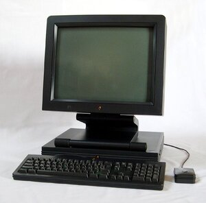
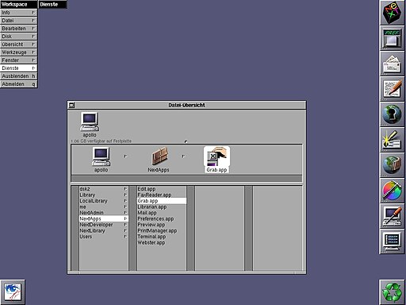
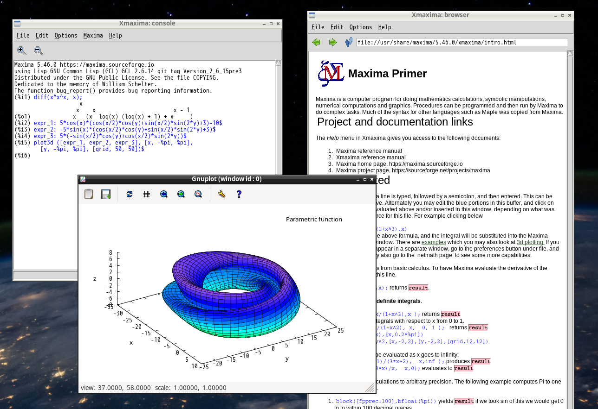
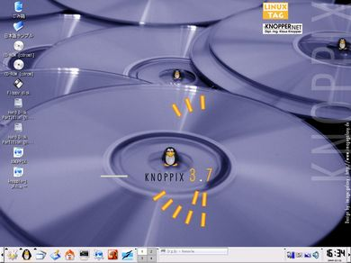
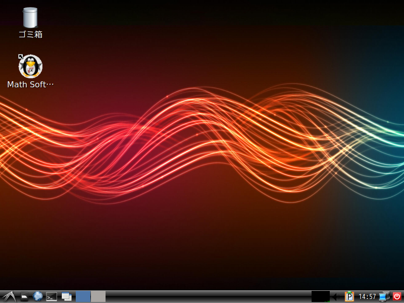
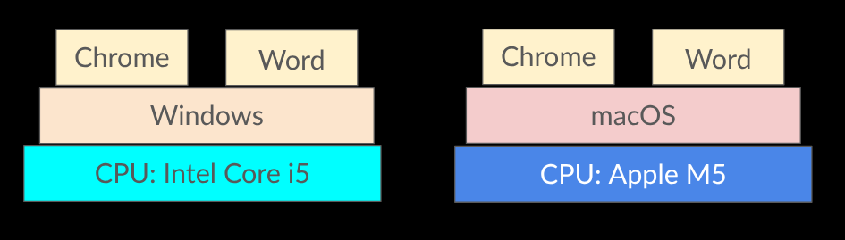
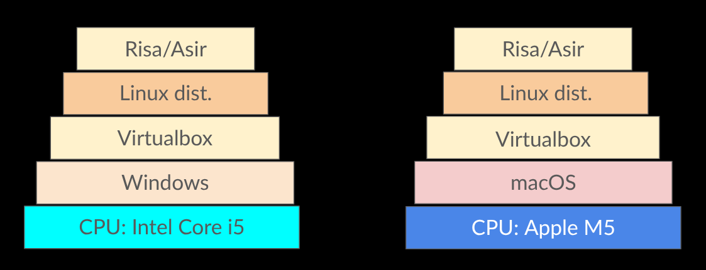
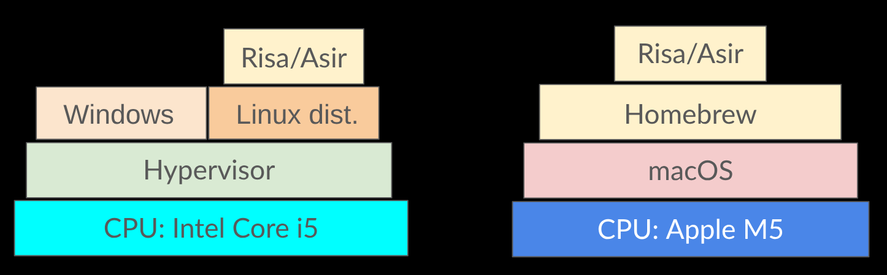
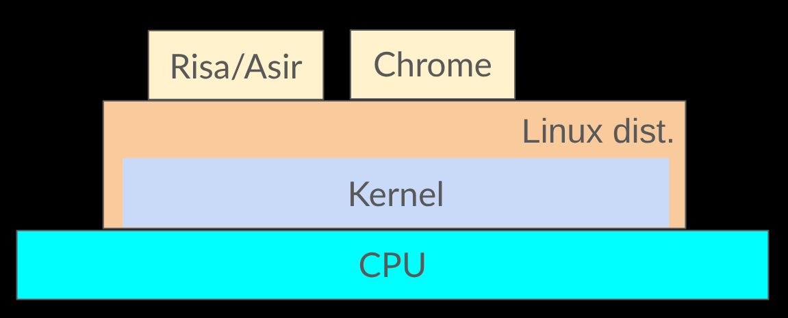
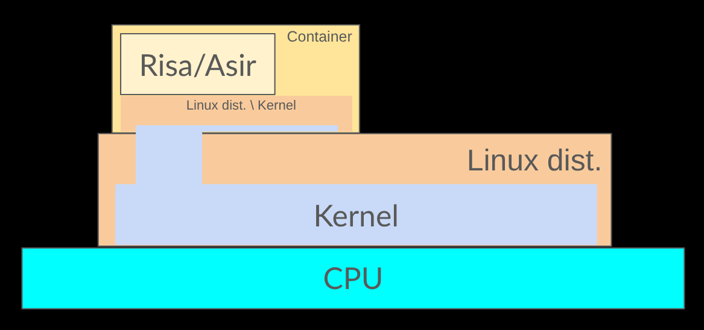

A container for mathematical software
濱田龍義（日本大学/OCAMI）
2026年3月17日（火） 11:00-12:00
東京理科大学野田キャンパス
1991年
- 中央大学松山善男研究室
- 永井節男さんと出会う


Mathematica 1.0
数学ソフトウェア
- 数学をあつかうソフトウェアのこと
- 数学の対象は広く，すべてをコンピュータで計算することは到底不可能だが、数値計算や数式処理を用いることで、様々な対象について計算を行うことが可能
- 高山信毅（神戸大学）
- 死ぬまでに, コンピュータと数学の問題に関して議論できたらというのが夢である. コンピュータプログラムは人間とは違う形のある意味の知性を持ち得るものと期待している.
数学ソフトウェアの抱える課題
- 開発の継続性
- ユーザ環境の構築
- ソフトウェアの普及
- 研究結果の再現性
開発の継続性
SIMATHを知っていますか？
- 1988〜1997頃に開発された数論システム
- Horst G. Zimmer and his research group at the Universität des Saarlandes, Saarbrücken (Germany).
- C言語のライブラリとして開発
- https://zbmath.org/software/861
SIMATH
- SIMATHをどこから取得するか？
- SIMATHをどうやって利用するか？
- 2000年代，都立大の中村憲研究室で開発承継を検討
- その後，オープンソースソフトウェアとして新規開始
- NZMATH (https://nzmath.sourceforge.io/)
The Open Source Definition
- 再頒布の自由
- ソースコード
- 派生ソフトウェア
- 作者のソースコードの完全性 (Integrity)
- 個人やグループに対する差別の禁止
- 利用分野(fields of endeavor)に対する差別の禁止
- ライセンスの分配(distribution)
- 特定製品でのみ有効なライセンスの禁止
- 他のソフトウェアを制限するライセンスの禁止
- ライセンスは技術中立でなければならない
伽藍とバザール
The Cathedral and the Bazaar
- Fetchmail等の開発者である Eric S. Raymond によるソフトウェアエンジニアリングに関するエッセイ
- 1997年5月，ドイツのWürzburgで開催されたLinux Kongressで発表され，その後，1999年に書籍として出版
- Mozilla Firefoxの前身であるNetscape Navigatorのオープンソース化に影響を及ぼしたと言われる
- その後，様々な分野の研究ソフトウェアにも波及
Maxima (1998-)
- Macsyma: AI project of MIT (1968-1982), proprietary software
- 1998年に William Schelter によってオープンソース化
- 数学/第41巻(1989)
- 入力方法
2*x $\rightarrow 2x$，x^x $\rightarrow x^x$
diff(x^x, x);
integrate(1/(x^3+1), x);
f(x):=x^2-5*x+6; solve(f(x), x);

2. ユーザ環境の構築
- Macaulay2 (1993-)
- Daniel Grayson (from the University of Illinois at Urbana–Champaign), Michael Stillman (Cornell University)を中心とするグループによって開発された可換環論や代数幾何学のための研究ツール
- Sun Workstation 上で動作
- 代数幾何学専攻の後輩が利用を希望
- Unixやコンパイラの知識が必要
Linux
- 1991年9月17日フィンランドの大学院生Linus Torvardsによって Linux Kernel が公開
- Linux Kernel とは，OSの中核となるソフトウェアでシステムのリソースや，ハードウェアとソフトウェアの連携を管理するソフトウェア
- 現在，普及している Ubuntu や Debian GNU/Linux, RedHat Linux 等は Linux Distributionと呼ばれる．
- Linux Distribution は Kernel と様々なソフトウェアから構成される．

KNOPPIX (2000-)
- ドイツのKlaus Knopperによって，KNOPPIXが開発，公開
- Live Linux と呼ばれ，CD/DVD や USBメモリから起動可能
- 2002-2015, 須崎有康（産総研）によって日本語版が公開

KNOPPIX/Math (2003-2012)
- 2003年からオープンソースソフトウェアの数学祖父たウェアを中心にKNOPPIX/Mathを開発，公開，配布
- 日本数学会2003年度年会にて1000枚のKNOPPIX/Mathを用意
- JST-CREST 日比チーム(2008-2013)
MathLibre (2012-)
- オープンソース数学ソフトウェアの配布環境
- https://www.mathlibre.org/
- 数式処理システム
- 組版システム
- VirtualBox等の仮想環境に対応
Risa/Asir, Maxima, Sage, ...
$\TeX{}Live(\LaTeX{})$

MathLibreの利用方法
- DVDから起動
- USBメモリから起動
- 仮想マシンとして起動
BIOSやUEFIの設定が必要
作成が少し面倒。その都度、再起動が必要
DVD内部にドキュメントと仮想マシンを収録
仮想環境 Oracle VirtualBox のインストールが必要
Risa/Asir
富士通研究所で開発された国産数式処理システム
高山信毅（神戸大学），野呂正行（立教大学）
小原功任（金沢大学），藤本光史（福岡教育大学）
グレブナー基底の計算で有名（「グレブナー道場」）
行列の基本変形や積分計算にも対応, 大島利雄（城西大学）
OSの概略図

仮想環境の概略図

WSL2 や Homebrew の利用

Linux環境の概略図

コンテナ環境の概略図
